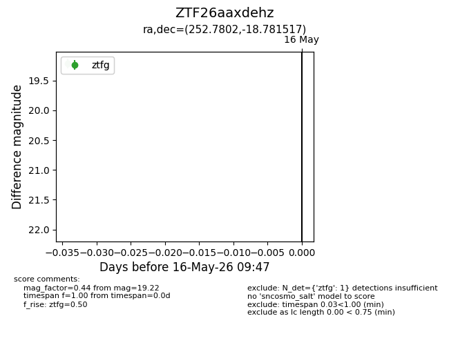
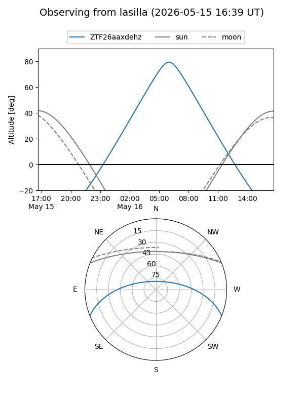
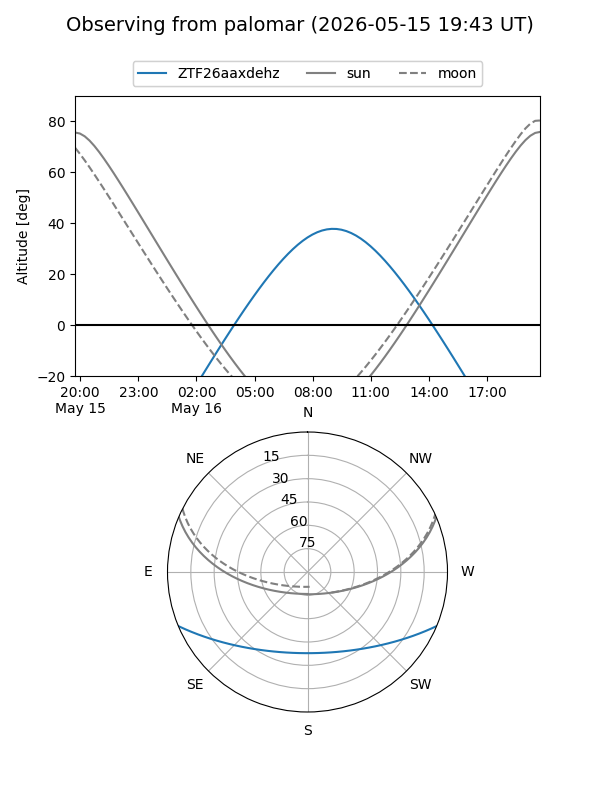

ZTF26aaxdehz
Target ZTF26aaxdehz at 2026-05-16 09:49
Aliases and brokers:
FINK: link
Lasair: link
ALeRCE: link
alt names
ZTF26aaxdehz (ztf,fink_ztf)
Coordinates:
equatorial (ra, dec) = 252.7802,-18.78152
equatorial (HMS+DMS) = 16:51:07.25,-18:46:53.46
galactic (l, b) = (1.3878,+15.99183)
Flags:
Photometry:
last ztfg=19.22
1 ztfg detections
Lightcurve

Visibility


Additional plots